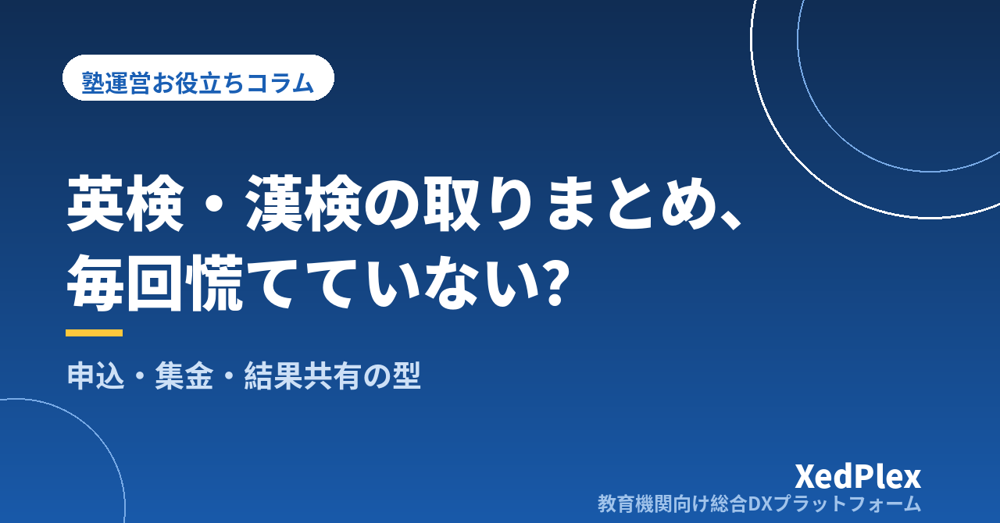

塾で英検・漢検などの検定をまとめて申し込むときの運営｜案内・申込の取りまとめ・検定料の集金・結果共有を型にする

「次の英検、塾で申し込めますか？」と保護者に聞かれて、慌てて締切を調べる。申込用紙を配ったものの、誰が何級を受けるのか、検定料を誰からもらったのかがメモと記憶に散らばっている。結果が出たころには、合否を誰に伝えたかも曖昧になっている──。検定の取りまとめをしている個人塾では、こうした場面が年に何度も繰り返されがちです。
検定は生徒にとって分かりやすい目標になり、保護者からの期待も大きい一方で、塾長にとっては「年に数回しか来ないのに、手順が多い」業務です。毎回ゼロから思い出していると、申込漏れや集金漏れが起きやすくなります。
この記事では、英検・漢検・数検などの検定を塾で取りまとめるときの流れを、年間スケジュール・案内と申込・検定料の請求・結果の共有の4つに分けて「型」にする方法を紹介します。なお、団体申込や準会場の条件、締切、検定料は検定ごと・年度ごとに変わるため、必ず各検定団体の最新の公式案内で確認してください。
検定の取りまとめで塾長が困りがちなこと
検定の取りまとめで起こりやすい困りごとは、だいたい次の4つに整理できます。
| 困りごと | よくある原因 |
|---|---|
| 締切に気づくのが遅れる | 実施日は覚えていても、申込締切や団体申込の受付期間を予定に入れていない |
| 申込内容の間違い・漏れ | 口頭やLINEで申込を受け、級・氏名の表記・受験会場などの情報が一か所にそろっていない |
| 検定料の集金漏れ | 現金で受け取ったり、月謝とは別に振り込んでもらったりして、入金の確認が個別対応になっている |
| 結果が指導に活きない | 合否を聞いて終わりになり、記録や次の目標設定につながっていない |
どれも塾長の注意力の問題ではなく、毎回の手順と情報の置き場所が決まっていないことが原因です。逆に言えば、一度型を作ってしまえば、次の回からは同じ手順をなぞるだけになります。
年間の流れを先に決める：実施回ごとの逆算スケジュール
最初にやるべきことは、塾で取りまとめる検定と実施回を決め、各回の締切から逆算した予定をカレンダーに入れておくことです。年度の初めに各検定団体の公式サイトで日程を確認し、次のような逆算表を作ります。
| 時期の目安 | やること |
|---|---|
| 申込締切の約4〜5週間前 | 保護者へ受験案内を配信する（対象学年・級の目安・費用・締切） |
| 申込締切の約2〜3週間前 | 塾内の申込締切。受験者一覧を確定し、級の最終確認をする |
| 申込締切の前 | 検定団体への申込手続き。控えを保存する |
| 申込直後の請求タイミング | 検定料を請求する（月謝とあわせるか別にするかは次の章で） |
| 受験票の届く時期〜実施日 | 受験票の配布・会場と持ち物の案内。直前対策の時間を確保する |
| 結果発表後 | 結果を記録し、保護者と共有。次回の受験予定を相談する |
塾内の締切は、検定団体の締切より1〜2週間早めに設定しておくのがポイントです。最後の数日に「やっぱり受けたい」という申し出が来ても受け止められる余裕ができます。季節講習の申込と時期が重なることも多いので、季節講習の申込管理や塾の年間事務カレンダーと一緒に1枚にまとめておくと、時期の重なりが一目で分かります。
案内と申込の受け方を決める
案内に入れる項目
受験案内は毎回ほぼ同じ形になるため、テンプレートにしておきます。最低限、次の項目を入れておくと問い合わせが減ります。
- 検定名・実施回・実施日（会場が塾か外部会場か）
- 塾として受験をおすすめする学年・級の目安と、迷ったときの相談先
- 検定料と支払い方法（「検定料は各検定団体の定める額」と書き、金額は最新情報で確認して記載）
- 塾内の申込締切と申込方法
- 申込後のキャンセル・級変更の扱い（検定団体側で受け付けられない場合があることも明記）
申込情報は一か所に集める
申込は口頭・LINE・紙が混ざると転記ミスのもとになります。受付方法を1つに決め、次の項目を一覧で管理しましょう。
| 項目 | 確認のポイント |
|---|---|
| 生徒氏名（漢字・フリガナ） | 受験票や合格証に載るため、表記を保護者に確認する |
| 受験する検定・級 | 本人と講師の見立てがずれていないか、締切前に講師と確認する |
| 受験会場・日程の区分 | 塾会場か外部会場か、複数日程がある検定はどの日か |
| 検定料の請求状況 | 請求済み・入金済みを同じ一覧で追えるようにする |
| 受験票の配布 | 渡した日と相手を記録し、「もらっていない」を防ぐ |
この一覧には生年月日などの個人情報が含まれることもあります。保存場所と閲覧できる人を決めておきましょう。基本の考え方は生徒の個人情報管理の記事で整理しています。
検定料の集金と請求をどうするか
検定料の扱いは、塾の負担が最も大きくなりやすいところです。主なやり方を比べると次のようになります。
| 方法 | よい点 | 注意点 |
|---|---|---|
| 現金で受け取る | その場で完了する | 受け取り記録・おつり・保管の手間。渡した・渡していないの行き違いが起きやすい |
| 月謝とあわせて請求する | 保護者の支払いが1回で済み、入金確認も月謝と一緒にできる | 請求月がずれると塾が一時的に立て替える形になる。明細で検定料と分かるようにする |
| 個人で直接申し込んでもらう | 塾の集金が不要 | 申込漏れに気づきにくい。塾として受験状況を把握する仕組みが別に必要 |
取りまとめる人数が多い塾では、月謝とあわせて「諸費用」として請求し、明細に検定名と級を書く形が管理しやすいでしょう。教材費や模試代と同じ扱いにしておくと、請求の手順を増やさずに済みます。諸費用全体の請求ルールは教材費・諸費用の請求管理で詳しく解説しています。
受験前後の連絡と結果の共有
受験前：受験票と当日の案内
受験票が届いたら、配布日と相手を記録しながら渡します。外部会場の場合は、会場・集合時刻・持ち物を保護者向けに一斉配信し、生徒本人にも口頭で伝えます。塾が会場になる場合は、当日の担当者・教室の割り当て・本人確認の手順などを、検定団体の実施マニュアルに沿って事前に確認しておきましょう。直前期の対策時間は、生徒ごとの学習計画に組み込んでおくと、検定対策だけで授業が圧迫されるのを防げます。
結果発表後：記録して次につなげる
結果は「合格おめでとう」で終わらせず、次の3つをセットにすると指導に活きます。
- 記録する：検定名・級・合否・可能であれば技能別の結果を、生徒の記録に残す。成績の記録の仕方は塾の成績管理の記事も参考にしてください。
- 保護者と共有する：合否だけでなく、できたこと・課題を一言添えて伝える。不合格だった場合ほど、次の受験時期と対策の見通しを示すと安心につながります。
- 次の目標を決める：次回受験するか、級を上げるかを本人・保護者と相談し、逆算スケジュールに反映する。
合格者を塾の実績として紹介したい場合は、掲載の同意を取ってから載せます。進め方は合格体験記・合格実績の集め方と載せ方で紹介しています。
まとめ
検定の取りまとめは、年に数回しかないからこそ「毎回思い出す」から「毎回なぞる」に変える価値があります。まずは次回の実施回について、締切から逆算した予定をカレンダーに入れ、案内文のテンプレートと申込一覧を1つ作ってみてください。検定料を諸費用として月謝とあわせて請求する形に整えれば、集金の手間も行き違いも減らせます。次の回からは同じ型を使い回すだけになり、塾長の負担はぐっと軽くなるはずです。
この記事を書いた運営より
私たちは、個人経営・小規模の学習塾向けに、生徒管理・QRコードでの入退室記録・月次請求・保護者へのLINE/メール通知・AIによる学習支援までをひとつにまとめた教育機関向け総合DXプラットフォーム「XedPlex（ゼドプレックス）」を開発・提供しています。初期費用は0円、料金は生徒1名あたり月額300円（税込）から。生徒50名の塾なら月15,000円（税込）です。全国8つの教室で導入されており、導入塾には紹介ホームページの無料作成も行っています。保護者へのメッセージ配信、月次請求・入金管理、タスクカレンダーなど、検定の案内から集金・予定管理までを仕組みで回すための機能もそろえています。機能の詳細説明はこちら。
XedPlexの詳細を見る